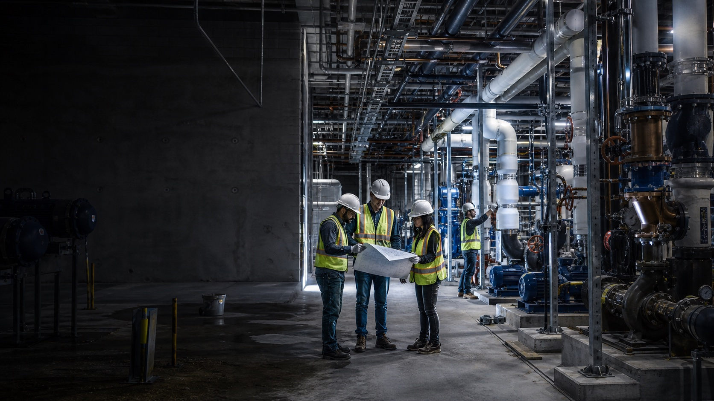
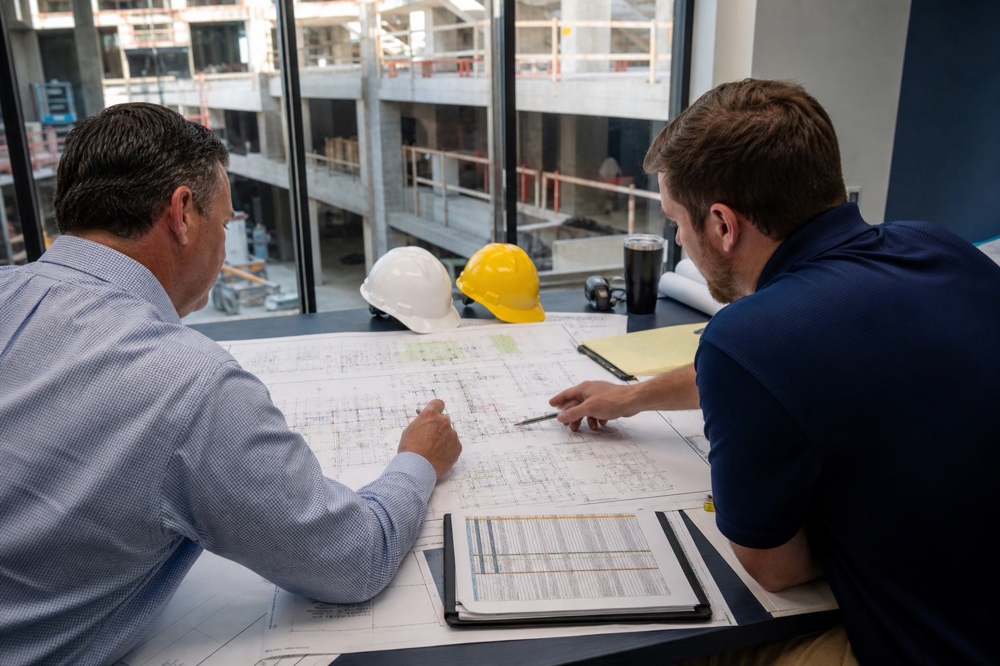
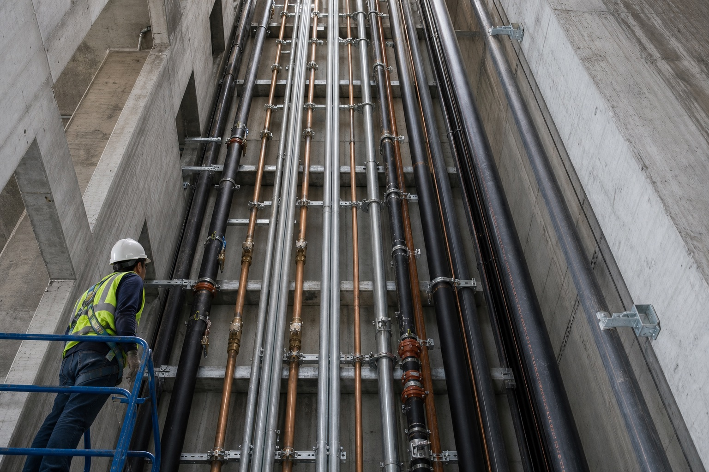
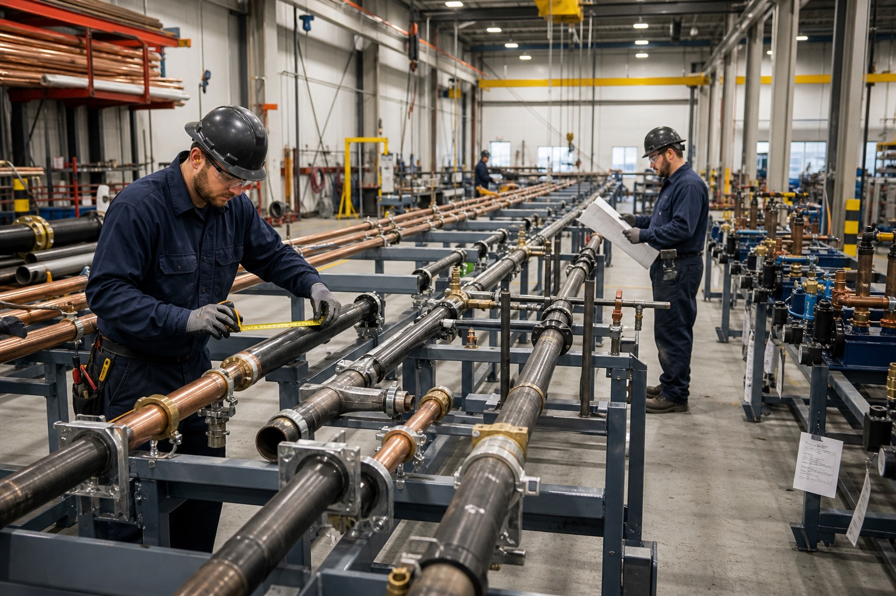
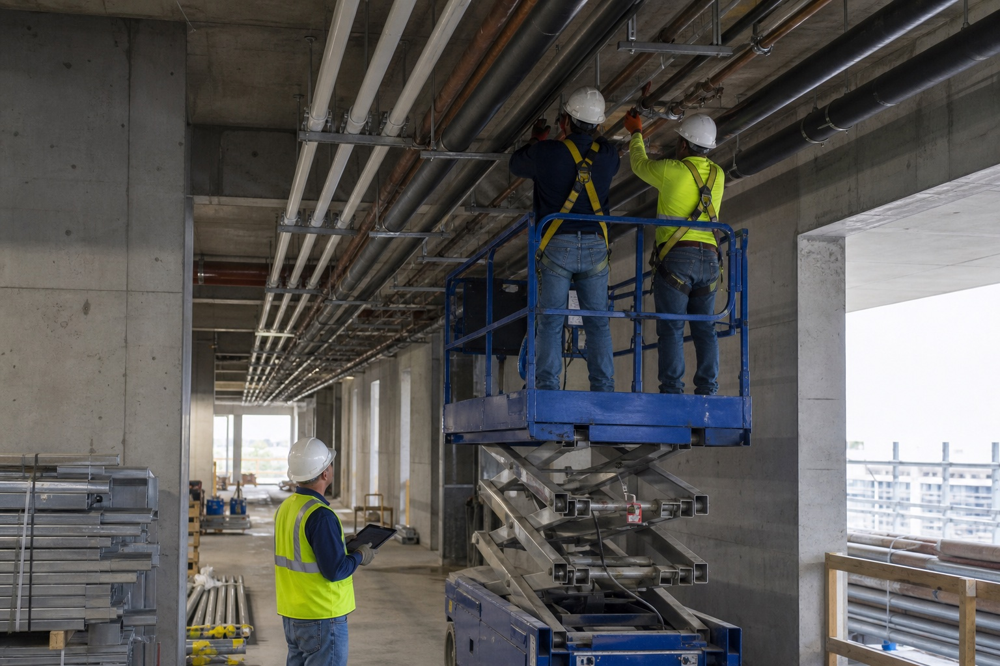

MARKETS / WHERE COORDINATION MATTERS
Built around demanding occupancies and fixed schedules.
Healthcare
Phased installations, infection-control constraints, and complex mechanical rooms.
02High-rise residential
Repetitive risers, floor releases, unit coordination, and turnover sequencing.
03Hospitality
Guestroom stacks, amenity spaces, kitchens, and deadline-driven openings.
04Education + civic
Occupied campuses, public procurement, and milestone-based phasing.
THE FULL PROJECT LIFECYCLE
The handoff is where projects lose time. We design it out.
Choose a phase to see the project information, field decision, and proof that moves forward.

Price the buildable scope.
Budget, constructability, long-lead items, and schedule risk are surfaced while options still exist.
- Input
- Design documents + milestone schedule
- Output
- Scope narrative + risk log
SELECTED PROJECT TYPES
Proof at building scale.
Hospital mechanical room
Central plant piping coordinated around live-facility constraints.

42-story riser program

Sequenced corridor racks

FIELD EXECUTION
Coordination only matters if the crew can build it.
- Install-ready releases Assemblies arrive labeled to match the plan.
- Constraint visibility Access, inspections, and downstream work stay in the look-ahead.
- Closeout starts early Testing and documentation follow the installed system.
BID INVITATION
Bring Apexline into the project before coordination becomes rework.
Send the bid date, location, delivery method, and scope summary. Drawing uploads remain offline until an approved secure document endpoint is connected.
Before the invitation.
What belongs in a bid invitation?
Include drawings, specifications, addenda, bid forms, schedule details, and the required bid date.
Can Apexline support preconstruction?
The concept includes budgeting, constructability review, coordination planning, and value analysis.
Which project types are a fit?
The concept is positioned for multifamily, hospitality, education, healthcare, and commercial work.